Paint presets
22 Nov. You said of painting that a preset that works well with it would be one of its true tests. These are four candidates for you to hear and see. None of them is in the bank; nothing is added until you choose.
Each is meant to be at its best in Paint, where Scan reads the painting, so the sound remembers what was played and changes as the paint builds, dries and is pushed about. Each is heard through a short performance made for it, and the same performance on the nearest bank preset as it ships, on the trace, so you hear what Paint adds. The pictures are the painting at moments through the performance - the page’s own look, fed the core’s strokes a sixtieth of a second at a time - each with the map Scan reads under it (thickness grey, wet paint blue).
Each heading was measured as honestytest.py measures the bank’s: the page loads the
preset as you would, and the core plays C4 held ten seconds from five moments after the load. Two are Settled and two
Breathing, as shipped.
Can a preset switch the screen to Paint? Yes, today, with nothing changed. What the screen draws is a setup
field since painting’s step 2 (screenDraws, with paintPersistence beside it), so a
preset or a code that names Paint loads in Paint: the page switches the display to Paint as it restores the setup,
and the core follows the field at its next picture frame. Each code below carries it. The other side of that is
already true of the bank too: every preset that does not name it draws the trace, so loading one of today’s
presets from Paint goes back to the trace.
Things to decide.
Which, if any, go in the bank, and under which heading. Each would go under the heading it measures as;
adding one is the bank’s usual steps (its lines, write_presets.py, its thumbnail by
write_figures.py).
A preset’s thumbnail is the trace’s figure. write_figures.py draws each card from
the instrument’s figure, so a Paint preset’s card would show a ring of the trace rather than a painting.
Whether a painted thumbnail is wanted is yours.
Painting can change a sound’s heading. The Drawbar organ is Settled on the trace; painted, a held note keeps changing as its own arc comes round the turn (0.024 late at its own Scan of 14, Breathing’s floor 0.019), so the Palette knife organ, at Scan 40, is Breathing. The Tine piano and the Slow pad keep theirs painted. Under your rule of 17 Nov that is not a fault of the organ preset, since Paint is not in it; but a preset that ships in Paint answers to its heading in Paint, as these were measured.
The knife at a wider bend. The Palette knife organ’s bend is a fourth, so a quick bend pushes the paint further than the step 3 page showed at a whole tone. The thin, patchy film where the blade starts then covers a wide patch and draws as squares a map cell across, in the map and the look alike (the second and third pictures, at the right). At two semitones it is the small film you saw. Whether to keep the fourth, or to smooth the film when the push is large, is yours.
How each was measured, heard. Each performance is cut into sections, and each section’s sound is read
as honestytest.py reads a quarter second - forty-eight bands a fifth of an octave wide, loudness
taken out - so changed from the first is how far a section is from the first section on the same scale as
the suite’s movement (a held note moving 0.019 a quarter second breathes). Brightness is the heard
spectral centroid. Scan reads is the brightness of the table Scan reads, in harmonics (a sine is 1).
In the charts: the candidate, in Paint the nearest bank preset, on the trace
Tines in wet paint Settled
Listen for The phrase rings brighter once it comes round
Watch for Each pass laid over the last one's drying strokes
The tine piano, painting. Each note reads the ring at its own pitch, which holds the last turn of everything played in its register, so a phrase played again reads the paint its last pass left and rings brighter the second time round than on a bare canvas; a held chord still settles.
The only changes from the Tine piano are the screen (Paint), Scan at 70 where it is 50, and the painting's Persistence at 32 s to half, so four passes of the phrase are still on the canvas.
Played: A sixteen-note phrase in A minor, half a second a note, eight seconds long - one turn of the canvas - played three times, so each pass lands where the last one painted.
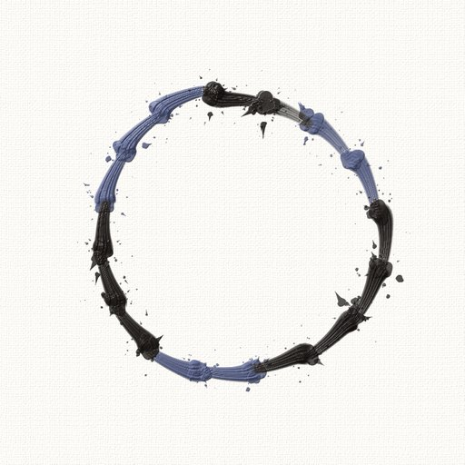
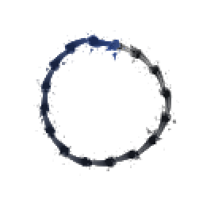
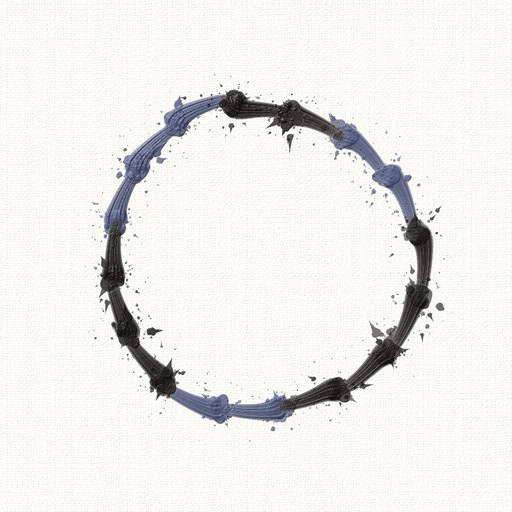
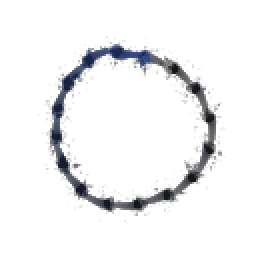
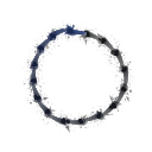
| Section | Heard: changed from the first / bank | Heard: brightness, Hz / bank | Scan reads / bank | Paint on the canvas |
|---|---|---|---|---|
| first pass 0.3–8.3 s | – / – | 639 / 536 | 2.16 / 1.10 | 1010, 31% wet |
| second 8.3–16.3 s | 0.143 / 0.014 | 682 / 542 | 2.35 / 1.11 | 909, 27% wet |
| third 16.3–24.3 s | 0.119 / 0.013 | 668 / 536 | 2.26 / 1.11 | 930, 24% wet |
Its heading, measured as honestytest.py measures the bank
| Probe | Early, five moments | Late | After, RMS | Verdict |
|---|---|---|---|---|
| C4 | 0.064 / 0.065 / 0.066 / 0.068 / 0.077 | 0.001 / 0.001 / 0.002 / 0.002 / 0.002 | 0.0000 | Settled |
The limiter on the suite's four-note chord: -3.8 dB (the bound is six). Tine piano, as shipped, on the same probe: Settled, late 0.001 / 0.001 / 0.001 / 0.001 / 0.001.
Drying pad Breathing
Listen for The same chord comes back changed each time
Watch for Each chord laid over the last one's drying arcs
The slow pad, painting, with a short memory. Each note reads the paint in its own register, so a chord played again plays whatever the last one left where it lands, wet or dry, and never comes back the same; held, its arc comes round to meet itself and it keeps moving until you let go. Rest, and the paint dries and fades, eight seconds to half.
The Slow pad with two changes: the screen in Paint, and the painting's Persistence short, 8 s to half, so a rest clears the canvas. Everything else is the Slow pad's, the Picture amount at full included.
Played: One chord, A minor, held four and a half seconds three times over, five seconds of rest while the paint dries, and the same chord again. The same notes every time, so what changes is what they land on.
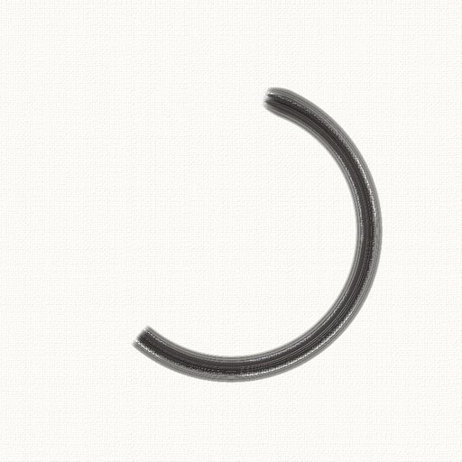
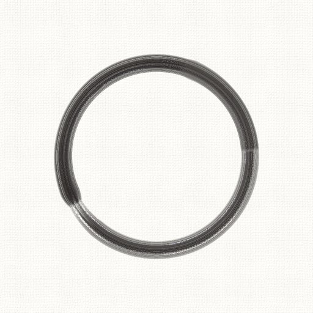
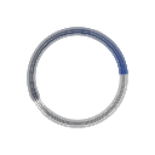
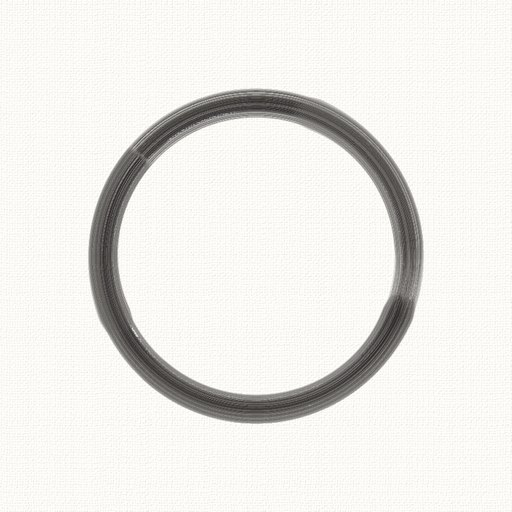
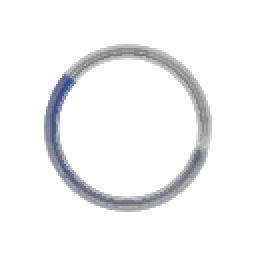
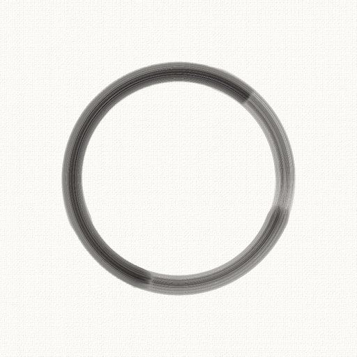
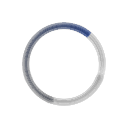
| Section | Heard: changed from the first / bank | Heard: brightness, Hz / bank | Scan reads / bank | Paint on the canvas |
|---|---|---|---|---|
| first 0.8–4.9 s | – / – | 533 / 189 | 1.54 / 1.10 | 327, 35% wet |
| second 5.8–9.9 s | 0.423 / 0.104 | 369 / 258 | 2.07 / 1.07 | 522, 22% wet |
| third 10.8–14.9 s | 0.123 / 0.056 | 476 / 334 | 2.43 / 1.05 | 481, 18% wet |
| after the rest 20.8–24.9 s | 0.485 / 0.056 | 361 / 219 | 1.56 / 1.09 | 395, 24% wet |
Its heading, measured as honestytest.py measures the bank
| Probe | Early, five moments | Late | After, RMS | Verdict |
|---|---|---|---|---|
| C4 | 0.141 / 0.137 / 0.130 / 0.119 / 0.109 | 0.140 / 0.144 / 0.157 / 0.170 / 0.190 | 0.0000 | Breathing |
The limiter on the suite's four-note chord: -0.7 dB (the bound is six). Slow pad, as shipped, on the same probe: Breathing, late 0.023 / 0.019 / 0.026 / 0.028 / 0.034.
Palette knife organ Breathing
Listen for The wheel and the bends leave the fifth changed
Watch for A loaded stroke, and a slab pushed by the bend
The drawbar organ, painting, with the mod wheel given to the brush alone and the bend at a fourth. Bring the wheel up and the brush loads, laying a wider, heavier stroke that Scan hears; bend away and the palette knife pushes the wet paint aside, so the same fifth struck again afterwards plays a changed ring.
From the Drawbar organ: Paint, Scan at 40 where it is 14, the wheel given to nothing in Expression (Off) so in Paint it only loads the brush, the bend at five semitones, and the painting's Persistence at 24 s. The Picture amount stays at nought: what moves is Scan reading the painting.
Played: A fifth, A3 and E4, held: the mod wheel brought up from rest over two seconds (4 s), a quick bend up a fourth and back (6 s), a slow bend down and back (9 s), the wheel let down (12 s); then the same fifth struck again plain at 15 s, over what was painted.
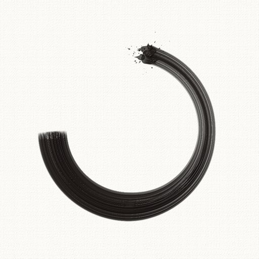
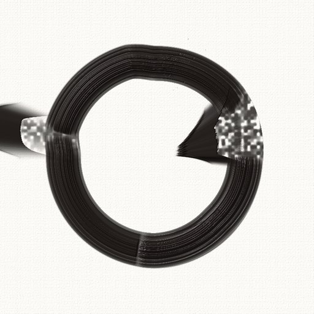
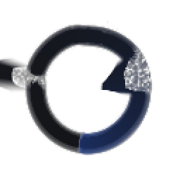
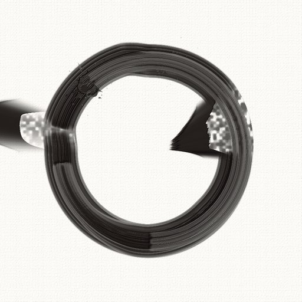
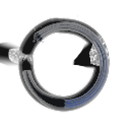
| Section | Heard: changed from the first / bank | Heard: brightness, Hz / bank | Scan reads / bank | Paint on the canvas |
|---|---|---|---|---|
| plain 0.3–2.0 s | – / – | 313 / 273 | 2.43 / 1.07 | 278, 61% wet |
| wheel up 4.0–6.0 s | 0.073 / 0.049 | 309 / 276 | 1.74 / 1.14 | 2658, 56% wet |
| quick bend 6.0–9.0 s | 0.519 / 0.407 | 394 / 293 | 1.66 / 1.18 | 5415, 41% wet |
| slow bend 9.0–12.2 s | 0.654 / 0.741 | 300 / 255 | 2.44 / 1.15 | 6815, 29% wet |
| struck again, plain 15.0–20.0 s | 0.214 / 0.031 | 356 / 275 | 2.31 / 1.12 | 3277, 5% wet |
Its heading, measured as honestytest.py measures the bank
| Probe | Early, five moments | Late | After, RMS | Verdict |
|---|---|---|---|---|
| C4 | 0.039 / 0.039 / 0.038 / 0.038 / 0.037 | 0.077 / 0.078 / 0.079 / 0.081 / 0.079 | 0.0000 | Breathing |
The limiter on the suite's four-note chord: -2.6 dB (the bound is six). Drawbar organ, as shipped, on the same probe: Settled, late 0.004 / 0.003 / 0.006 / 0.005 / 0.003.
Spattered mallets Settled
Listen for A glassy mallet that rings out brighter struck hard
Watch for Hard strikes splash blots and throw drops
A struck sine with its FM at four to one, painting at full Strike. A hard note lays a heavy blot that Scan reads brightly and throws drops of paint across the canvas; a soft phrase lays thin strokes and leaves it clean. The painting keeps the record for forty seconds to half. A held note settles.
Not a bank preset's: a sine with FM at 4:1 whose index follows the note's envelope, a short decay, Strike at 100 (so drops start at a velocity of about 45) and Scan at 70; the painting's Persistence 40 s. Nearest in the bank is the Tine piano, the other struck FM sound. What Paint adds here is mostly to see: struck hard, it is brighter in Paint and on the trace alike (2,980 against 2,028 Hz; 2,610 against 1,823 with the same setup on the trace). The soft pass after the hard one is not coloured by it: it is 0.114 from the first soft pass, and the same phrase played soft all three times is 0.129 - the change any repeat makes on the canvas, measured with the middle pass soft.
Played: C E G C B G E D, half a second a note, three times: soft (velocity 50); every other note struck hard (127); soft again, over what the hard notes threw.
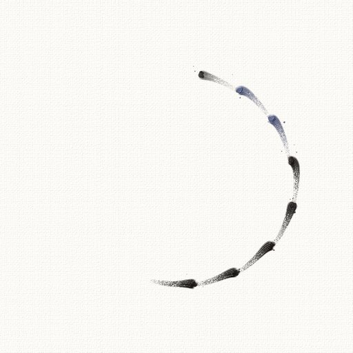
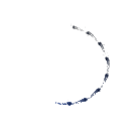
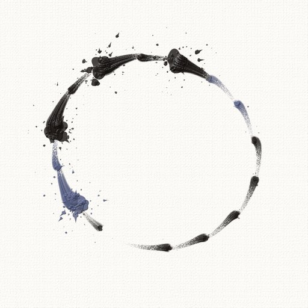
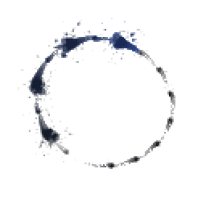
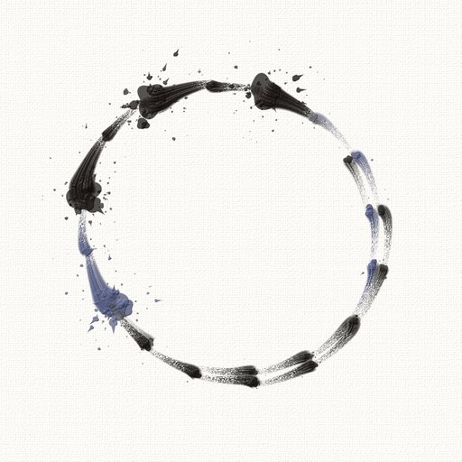
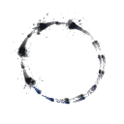
| Section | Heard: changed from the first / bank | Heard: brightness, Hz / bank | Scan reads / bank | Paint on the canvas |
|---|---|---|---|---|
| soft 0.3–4.3 s | – / – | 2028 / 489 | 2.85 / 1.02 | 102, 41% wet |
| with hard strikes 4.8–8.8 s | 0.191 / 0.170 | 2980 / 767 | 3.35 / 1.10 | 602, 41% wet |
| soft again 9.3–13.3 s | 0.114 / 0.018 | 2188 / 486 | 3.59 / 1.03 | 644, 12% wet |
Its heading, measured as honestytest.py measures the bank
| Probe | Early, five moments | Late | After, RMS | Verdict |
|---|---|---|---|---|
| C4 | 0.104 / 0.107 / 0.107 / 0.108 / 0.105 | 0.001 / 0.002 / 0.002 / 0.001 / 0.001 | 0.0000 | Settled |
The limiter on the suite's four-note chord: -3.9 dB (the bound is six). Tine piano, as shipped, on the same probe: Settled, late 0.001 / 0.001 / 0.001 / 0.001 / 0.001.
Made by measure.py (the headings and the setup codes, through the page), render.py
(with render.cpp, the core playing each performance from the code alone, beside this page) and
page.py. The candidates are in candidates.py; every number is in
measured.json and results.json. The look is rendered by SwiftShader; on a real graphics
card it is the same picture.